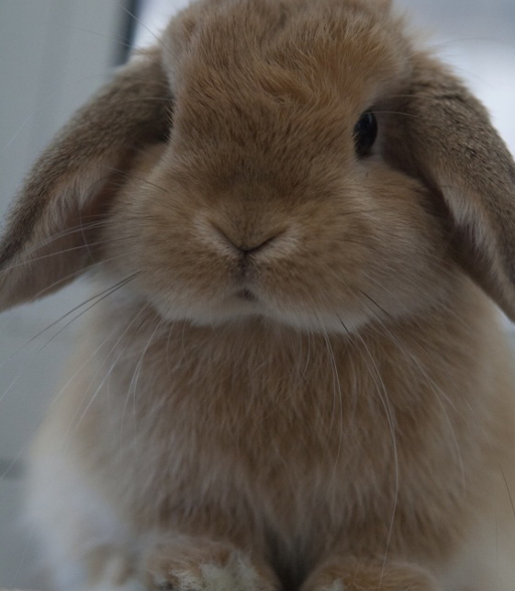
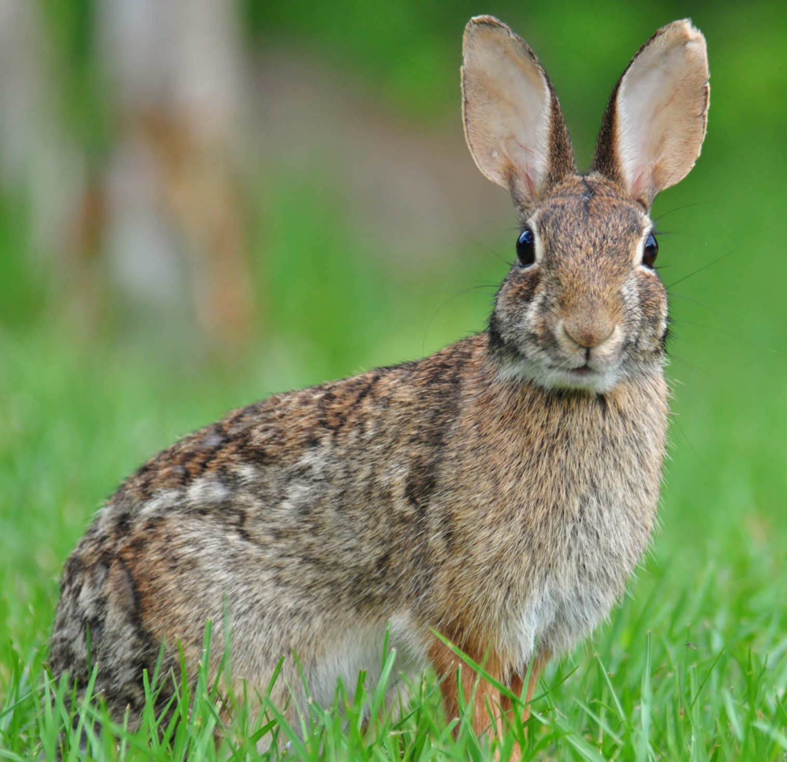
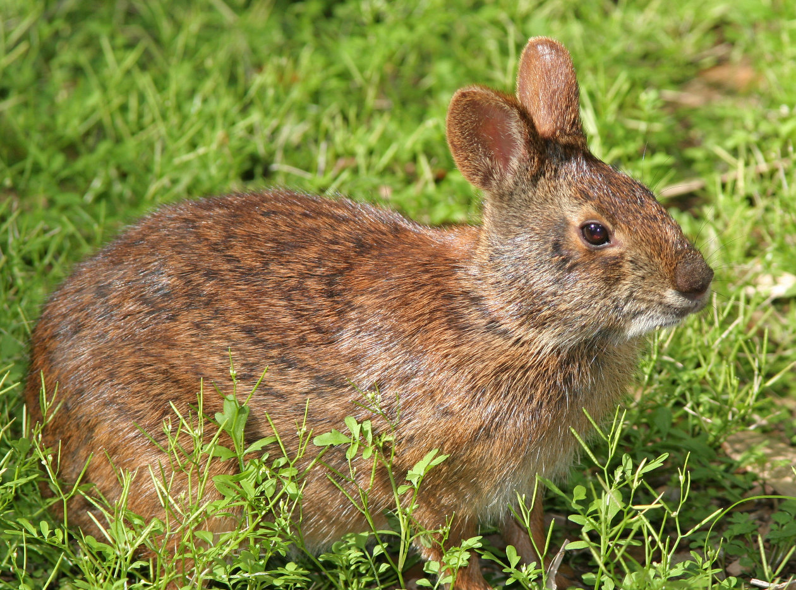

I've never had any pets before (besides a guppy that lasted for 2 weeks), and I definitely know when I get one, my first option would be rabbits. They're just so innocent and cute! And since I'm the type of person to always plan ahead, I went on to research my favorite types of rabbits. There were so many amazing options! I managed to narrow down the list luckily.
Below are my favorite breeds of rabbits.
Miniature Lop |
|
|---|---|
|  Psst, click on the image to learn more about Miniature Lops! Return to Top |
Miniature Lops immediately caught my attention. There's actually many different types of lop rabbits – refer to the picture of an European Lop above – but I decided the Miniature Lops were my favorite. Its small size makes it extra adorable |
Eastern Cottontail |
|
|---|---|
|  Psst, click on the image to learn more about Eastern cottontails! Return to Top |
This rabbit caught my attention because of its ears. I thought those ears were more suited for deer instead of a rabbit. Then, the thought the rabbits becoming deer became extremely amusing to me. I love the variation in Eastern cottontails' coats. |
Marsh Rabbit |
|
|---|---|
|  Psst, click on the image to learn more about marsh rabbits! Return to Top |
At first, I could not tell the marsh rabbit was a rabbit. Its ears were just so tiny! However, I did soon learn that marsh rabbits, are indeed, rabbits (and extremely cute rabbits, might I add). I love marsh rabbits. |